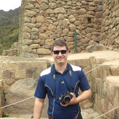

Essa é a segunda edição do PySM, um evento com o objetivo de reunir a comunidade Python de Santa Maria e região para promover debates e a troca de conhecimentos através de palestras técnicas para todos os públicos, do iniciante ao expert. Venha participar e prestigiar o evento!
A entrada ao evento é gratuita e as vagas são limitadas. Fique esperto ;)
Traga 1Kg de alimento não perecível ;)
Palestrantes confirmados
Relsi Maron
Palestra: Controle sua Casa Remotamente com Python e Arduino
Co-fundador da startup CodeFreelas. Atua na área de desenvolvimento web há aproximadamente 7 anos. Membro do MateHackers e do PyTchê. Atualmente trabalhando em projetos na área de internet das coisas com Python e Arduino.
Luiz Henrique Rauber Rodrigues
Palestra: Vendo o óbvio do não óbvio do Python imediatamente!
Profissional liberal, ou consultor, ou algo que valha em assuntos relacionados a tecnologica. Agita por aí sobre as temáticas de Software E Livre, Hardware Livre, Consciência Ágil e Startups....
Matheus Pereira
Palestra: Pythonificando a Universidade
Mestrando em Inteligência Artificial na UFRGS, bacharel em Ciência da Computação pela UCS, desenvolvedor de software, programador Python/Zope/Plone, professor, pesquisador e entusiasta de conhecimento compartilhado e software livre.
Raphael Giordano do Nascimento e Silva
Palestra: Python aplicado a bioinformática
Bacharel em Ciência da Computação pela UFSM, Pesquisador do SIn (Grupo de Pesquisa em Sistemas Inteligentes). Áreas de pesquisa: bioinformática, mineração de dados, aprendizagem de máquina e informática na educação.
Henrique Leal
Palestra: Testes de aceitação com Lettuce e Splinter
Apaixonado por Web, Linux, Software Livre e
metodológias ágeis, Python/Django e jQuery.
Programador da Turbosys e Acadêmico de sist. de informação =)
Tonin de Rosso Bolzan
Palestra: Python 3, o __futuro__ é agora
Desenvolvedor Web & SysAdmin. Programador desde 2008, atualmente trabalho com Desenvolvimento Web utilizando tecnologias open-source, tais como Linux, PHP e Python. Organizador do Software Freedom Day Santa Maria e FEMUG-SM.
Leandro Nunes
Palestra: I'm Feeling Lucky: Python e Sistemas de Busca Customizados
Desenvolvedor de software no centro de pesquisa e desenvolvimento da Hewlett-Packard e hobbista na área de eletrônica.
Evandro Leopoldino Gonçalves
Palestra: Metaprogramação em Python
Programador full-stack, 10 anos de carreira, trabalhou na AG2, Globo.com e Grupo RBS. Contribuidor de projetos open-source (Python, JavaScript e Lua), está trabalhando para sua empresa Eventer e em um HTTP Server (open-source!) 100% escrito em Lua, chamado Pegasus.lua.
Victor Poluceno
Palestra: Stream processing com Python e Apache Storm
Desenvolver Python e entusiasta em Elixir/Erlang. Apaixonado por sistemas distribuídos e projetos open source. Trabalha como Desenvolvedor Líder na Azion.com.

Adriano Margarin
Palestra: Primeiros passos com Splinter
Bacharelando em Sistemas de Informação na Universidade de Caxias do Sul. Membro assíduo do Diretório Acadêmico de mesmo curso. Desenvolvedor Python/Django a 3+ anos. Colaborador na empresa Pull4Up